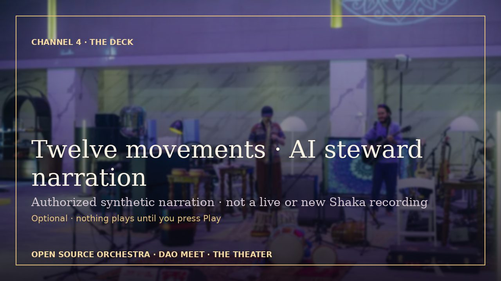
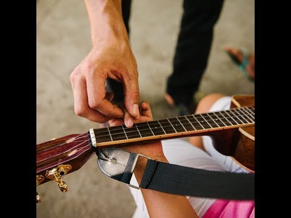
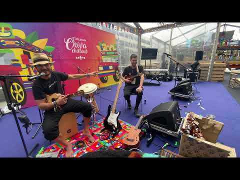

Weekly call #2 · right before Devcon 8
ShakaAakashNidhiSonyaDevangJaydeepLevi
The Music Space family deciding how four days of music on the floor of Devcon 8 would breathe. Chapters: opening and introductions · what the sanctuary is (7:10) · continuous flow (25:18) · India × the West (36:25) · the cultural floor (49:21) · sound check (1:07:11) · stewards (1:09:08) · the jam (1:26:25).
Video (archive.org, 445,416,974 bytes): https://archive.org/download/oso-weekly-call-2-2026-10-27/weekly-call-2-2026-10-27.mp4
Captions re-timed from the public notetaker transcript (−412.5 s, because the Google Meet recording began after the consent line).
Proposal Meeting #1 · The First Circle
ShakaBenLeviUtkarsh
Shaka opens the first proposal circle after Devcon 8 with Ben, Levi and Utkarsh: how a no-commission orchestra might one day fund flights, housing and a shared backline retroactively and equally, from EthCC in Cannes to Devcon 9 in Lisbon. Levi describes his co-op’s approach to rights and revenue splits, Utkarsh’s x402 agent-tipping work is recapped, and the circle agrees only to keep talking — the DAO stays a proposal, in Shaka’s words “just a prayer.”
Video (720p H.264, byte-range streaming): https://theater.opensourceorchestra.org/oso-dao-proposal-meeting-1-2026-11-12-720p.mp4 · SHA-256 and bytes in status.json
Audio: mono MP3, 25,853,012 bytes · captions, transcript HTML/TXT/VTT/JSON.
Proposal Meeting #2 · The second circle
ShakaAakaashShaVipul
From the lobby of 4Seas in Chiang Mai: no token for OSO, gift first and receipts after, a permanent European backline for the road to Lisbon, a Devcon 9 song, copyright care from Vipul — and a tour of this very hall. Two 4Seas hosts say hello at the close. Everything remains proposal, not decision.
Video (720p H.264, byte-range streaming): https://theater.opensourceorchestra.org/oso-dao-proposal-meeting-2-2026-11-13-720p.mp4 · SHA-256 and bytes in status.json
Audio: mono MP3, 27,261,952 bytes · captions, transcript HTML/TXT/VTT/JSON.
The deck · AI steward narration
The First Circle slides, read by the authorized synthetic Shaka-agent steward voice, with captions and a complete sourced transcript. AI-agent-steward synthetic narration authorized by Shaka; not a live or new recording of Shaka. An AI speaker, not human presence or meeting attendance; based only on cited public records. Dated written errata: Devcon IX is 12–14 October 2027.

Todo Es Posible · Música con JAMón
The OSO motto — everything is possible — as a Pinolero demo track. Published by Shaka on his own channel; shown here as his example of how the orchestra’s public media files grow: recorded, blessed, shared. In the theater it loads only when you choose, from youtube-nocookie.com.

Devcon 6 · Chiva Chillout Lounge · 2022
From Shaka’s shakaleikaumaka channel: the Devcon VI chiva chillout lounge in Bogotá, October 2022 — where the first Open Source Orchestra DIP activated the Music Stage. The oldest public media file in the ledger, and the proof that a circle on the floor travels.

Growing the OSO DAO public media files. Every blessed recording and transcript becomes a public media file at /meetings/: notetakers enter first, consent is asked out loud on the recording, the host hits record last, nothing is cut, nothing goes public until everyone has said yes. Record your circle the same way and add yours — PIT protocol · publicinform · join the road. The DAO remains a proposal and public community ledger, not an on-chain or adopted DAO; appearance in a recording is not membership.